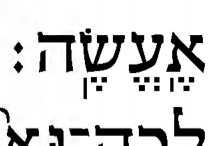

Alternatively, you can click on an individual Hebrew word to toggle only that word's spacing.
← Back to Meteg after the stress.
With very few exceptions, manuscripts and printed editions use the same vertical stroke for both meteg and silluq (φ1). Here we coin a portmanteau “metsil” to describe that ambiguous stroke. A verse-final word always has at least one metsil. If it has only one metsil, that metsil must be the silluq. But if it has more than one metsil, it is not clear which one is the silluq. Fortunately, in all but a handful of cases, the last metsil is the silluq. This document discusses the handful of cases in which the last metsil is a meteg rather than the silluq. That is to say, in these cases there is a meteg after the silluq.
For example, Jacobson, in his CHB (p. 31), brought a case at 1 Sam. 17:5 to our attention. In the Leningrad Codex, and in the many editions that, for better or for worse, try to stick close to that manuscript, the final word (letters נחשת) has a meteg after the silluq:
נְחֹֽשֶֽׁת׃
Or, coloring its stressed syllable green and the syllable of its later meteg yellow (for “caution”):
נְחֹֽשֶֽׁת׃
In contrast, in other manuscripts and editions, there is no such meteg after the silluq:
נְחֹֽשֶׁת׃
These other manuscripts and editions include the following:
We might compactly represent the situation like this:
-L----
A-5CKS
That notation uses one-character manuscript/edition codes to show, on its first line, who has a meteg after silluq, and on the second line, who doesn't. The codes are as follows:
| code | manuscript or edition |
|---|---|
A |
Aleppo Codex |
L |
Leningrad Codex |
5 |
Sassoon 1053 |
C |
Cairo CoTP |
K |
Koren |
S |
Simanim Tanakh |
Having introduced our notations through the 1 Sam. 17:5 example above, we now present all our cases of concern:
| bcv & img | Sources | |
|---|---|---|
| נְחֹֽשֶֽׁת׃ | 1 Sam. 17:5 | -L---- |
| לְכֻלָּֽהְנָֽה׃ | 1 Kgs. 7:37 | A----- |
| גַּם־עָֽתָּֽה׃ | 1 Kgs. 14:14 | -L---- |
| הִתְרֹעָֽעִֽי׃ | Ps. 60:10 | -L---- |
| חֽוּשָֽׁה׃ | Ps. 70:2 | -L---- |
| יְבָרֲכֶֽנְהֽוּ׃ | Ps. 72:15 | -L---- |
| מֶֽנְהֽוּ׃ | Job 4:12 | AL57-S |
In the four Sifrei Emet rows, a one-character code '7' appears instead of 'C'; that's because we use Cambridge 1753 as a reference there instead of Cairo CoTP.
As mentioned above, we became aware of 1 Sam. 17:5 from Jacobson, CHB, p. 31. We became aware of 1 Kgs. 7:37 from Breuer, CoS, ch. 8 §47, footnote 54 (p. 355 in the Wengrov English translation). We became aware of the remaining five entries from various searches of our own.
In Da'at Miqra, Breuer notes the Leningrad Codex's meteg after the silluq in five of these seven words; the exceptions are 1 Kgs. 7:37 and Job 4:12.
MAM's note at 1 Kgs. 7:37 reports both manuscript readings: the Aleppo Codex has the later meteg, while the Leningrad Codex has the silluq alone. MAM's body text has the meteg after silluq, following the Aleppo Codex. This choice retains MAM's general policy of following the Aleppo Codex (φ2).
At 1 Kgs. 14:14, UXLC acquired a second metsil through Daniel Holman's change proposal 2022.08.31-17.
One book whose typography distinguishes silluq from meteg is the 2005 revised edition of The Torah: A Modern Commentary (W. Gunther Plaut, original editor; David E. S. Stein, revised-edition editor). There are thousands of examples that could be used, but let's use its version of the last word of Num. 23:26 (letters אעשה), because in this word both the silluq and the meteg appear next to a segol, providing an obvious visual yardstick:

MAM diverges from Aleppo only when a specific editorial policy requires a different form or, in a rare case, when Aleppo is fairly clearly erroneous or fairly clearly outside the manuscript tradition of which Aleppo is generally the greatest example. Because meteg after silluq is so rare, such a judgment is difficult here, so it makes sense that MAM follows Aleppo in the two of our seven cases in which Aleppo has meteg after silluq: 1 Kgs. 7:37 and Job 4:12.